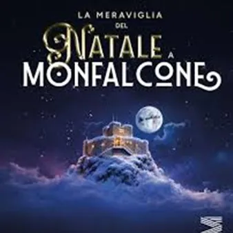

da mar 1 dic a ven 8 gen
La meraviglia del Natale a Monfalcone
Monfalcone si prepara a "La Meraviglia del Natale"! Dopo "L’Incantesimo del Natale", il titolo della rassegna natalizia del 2024, e "Il Sogno del Natale", che ha contraddistinto il Natale monfalconese dello scorso anno, il filo conduttore del 2026 è la "Meraviglia", dal latino…
 Indicazioni
Indicazioni
- Costi e prenotazioni
- Costo non indicato · Prenotazione non indicata
- Programma
- Programma da verificare. Apri la fonte ufficiale per orari e possibili aggiornamenti.
- In caso di maltempo
- Nessuna indicazione specifica pubblicata.
- Note
- Acquisito automaticamente dalla fonte.
L’EVENTO
Descrizione completa
Monfalcone si prepara a "La Meraviglia del Natale"!
Dopo "L’Incantesimo del Natale", il titolo della rassegna natalizia del 2024, e "Il Sogno del Natale", che ha contraddistinto il Natale monfalconese dello scorso anno, il filo conduttore del 2026 è la "Meraviglia", dal latino "mirabilia", parola che rimanda allo stupore, all'ammirazione e al coinvolgimento dei cittadini nei confronti del ricco calendario di eventi e iniziative del Natale monfalconese, ma anche per gli spettacolari allestimenti e le maestose luminarie che irradiano la loro luce e magia in ogni ancolo della città.
Undici gli abeti che verranno accesi tra il centro storico e i quartieri, tra i quali spicca il grande albero in piazza della Repubblica, la cui accensione è fissata per mercoledì 3 dicembre, alle ore 18:00, in concomitanza con l'accensione della Natività sulla Rocca e della grande sfera luminosa posta al centro della piazza, assolutà novità di quest'anno!
Sempre alle ore 18:00, è prevista l'inaugurazione ufficiale del Villaggio di Natale, alla presenza del Sindaco e delle autorità cittadine, allietata dalle note della Banda Civica Città di Monfalcone e dalle performance del Gruppo Costumi Tradizionali Bisiachi e della Compagnia del Carro di Staranzano.
A comporre il consueto Villaggio di Natale, le tipiche casette di legno, l'amatissima pista di pattinaggio sul ghiaccio, il presepe tradizionale al centro della piazza e la Casa di Babbo Natale con postazione dedicata alle letterine dei più piccoli, attiva dal 3 al 24 dicembre. Immancabile anche la storica mostra di presepi artigianali all'interno del Municipio.
Ad anticipare il Natale monfalconese, sabato 21 novembre, giorno della Madonna della Salute, Patrona della città, l’accensione delle luminarie, alle ore 17:00, alla presenza del Sindaco e delle autorità comunali.
Il calendario del Natale monfalconese 2026 prevede molti appuntamenti della tradizione, tra i quali la Fiera di San Nicolò, che animerà il centro città il 5 dicembre; il concerto itinerante della Bandakadabra dell'8 dicembre; gli spettacoli di UR.CA. Winter Edition, nel weekend del 12 e 13 dicembre; la slitta del Grinch, in programma il 22 dicembre e lo spettacolo Cosplay On Ice del 27 dicembre.
Ma vi sono anche fantastiche novità, che susciteranno la curiosità e l'interesse di tutte le generazioni!
Tra queste, l’"Aperitivo bisiaco – Christmas Edition" del 19 dicembre e la "Pizza con delitto - Delitto in Villa Arzilla" del 12 dicembre.
Grande novità anche per l'evento di fine anno in Piazza della Repubblica, quando accoglieremo il nuovo anno con animazione, DJ set e musica live di Radio Company!
Le feste coinvolgeranno anche i musei e gli spazi culturali, con concerti e spettacoli al Teatro Comunale, letture e incontri in Biblioteca comunale, visite e laboratori al MuCa e la mostra dedicata a Emilio Vedova in Galleria Comunale d'Arte Contemporanea.
A completare il programma, alcuni appuntamenti sportivi e iniziative promosse dalle associazioni locali.
Tanti anche gli appuntamenti dedicati ai più piccoli, ospitati in Piazza della Repubblica e Piazza Unità!
A concludere "La meraviglia del Natale a Monfalcone", il 6 gennaio 2027, le immancabili e simpaticissime Befane!
Per scoprire tutti gli appuntamenti, gli orari e le modalità di partecipazione, consultate il libretto allegato.
IL PROGRAMMA
Programma e orari
Appuntamenti raccolti dalle fonti elencate. Dove manca un orario, non è ancora disponibile in questa scheda.
Programma pubblicato
- Dal 2026-12-01 al 2027-01-08
INFORMAZIONI UTILI
Prima di partire
- Controllare la fonte prima di partire.
ORGANIZZAZIONE